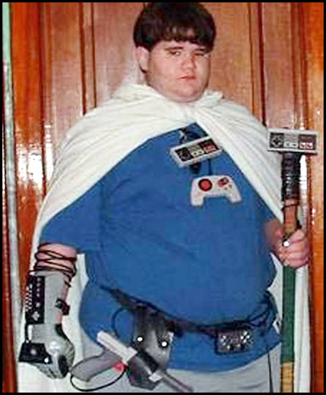

MITM is a young, recovering beta who loves life. He enjoys fitness, philosophy, and almost anything else you can imagine.


I was a jolly lad of 12 years. I had just been enrolled in a kind of fancy Christian classical/liberal arts school along with my best friend, and boy, was I pumped. As I walked into the school with my dapper new uniform and my buddies beside me, I was excited about this new experience.
I had a blast going through my day. I loved my teachers, loved my classes, and knew I was going to meet some great friends. But then came Mrs. Davis’s 12:30 Latin class. It started out just like any other class, with prayer and an introduction to the course. Excited to learn about my new classmates, I listened eagerly to them tell the class their names, where they lived, and their hobbies. Then, this one girl stood up and started talking. Her name was Martha, she lived in Atlanta, and she liked dancing. She was also the prettiest girl I’d ever seen in my 12 years.
Needless to say, as I got to know her, I developed a crush. Well, a crush is an understatement. I became obsessively fixated on her for four straight years, right up until age 17. I spent two years mustering up the courage to tell her I “liked” her, got friend-zoned, and spent another two falling into depression.
I just finished my junior year in high school, and am finally proud to announce, I am a red pill male. In what follows, I’m going to detail my journey from a promising young pre-teen to a miserable young adult in the depths of darkness, and back again into the light. Hopefully my story will show you how truly horribly the disease of oneitis can destroy a man’s life.
At first, my crush didn’t really affect me all that much. I was 12 and my balls had barely dropped. I still vehemently denied any sort of attraction to girls, like we all did at that age. However, the seeds were planted in my mind. Between my own obsession with the girl, and the poisonous doctrines of chivalry and monogamy taught by my school, a disaster was in the making.
Shit started to hit the fan when I turned 13. At this point, my friends were also starting to vocalize their interest in the opposite sex. I did as well. Unfortunately for me, I was not in Martha’s league at all. I don’t really remember the social dynamics all that well, but my clique just wasn’t on the same level as hers. So, while my friends actually had the ability to get the girls they liked (who were on our level), I was stuck looking up to Martha. It really wouldn’t have been so bad if it weren’t for the fact that I had my mind set that the only girl I could ever like was Martha. There was no way anything could change my mind. And I believed it with all my heart. You can imagine how I felt when she got a boyfriend way above my league.
Now I was 14, and I was starting to understand the ways of the world a bit better. Most of my friends have girlfriends, school’s getting harder, and Martha’s body is beginning to fill out (quite beautifully, I thought). I started to feel left behind. I had always been a good student, but my grades had started to slowly drift down. I wasn’t really interested in hanging out with my friends that much anymore. I was bitter because they had their girlfriends, and all I had was my obsession with Martha. I found solace in video games. Along with video games came obesity. With obesity, came self-consciousness and depression. Although I have to attribute some of this to my hormones as I grew up, I do believe that my fixation on Martha had the biggest part in it. If I had simply gotten over her, I would have lived a healthy teenage life.
Then it happened—she broke up with Andy. Unfortunately for me, it was because she had gotten really religious. You have to realize that at my school, most of the students were half-assing Christianity. They would vehemently defend it in one breath, and be cursing and jacking off in the next. Therefore, when I say she got devout, I mean it. She renamed her middle name after a saint, started wearing a head covering into church, and not one foul word escaped her mouth.
Out of desperation, I finally confessed to her that I had a crush on her for the past two years. She said, “Oh, well, thanks for telling me. You’re a great friend. If you ever need to discuss something, just remember I’ll be here.” I went home and cried like a little bitch.
The next two years, I became almost a hundred pounds overweight, lost all of my friends to stupid arguments, and played video games. The worst part, though, was that it was all because of the fact that I was so obsessed this girl. I remember spending nights on my laptop stalking her social media and crying. Talk about a beta male, I was the very definition of it. I cringe at the thought of what I was. A decrepit, miserable chunk of lard, jacking off to video game characters and whining about how much the world sucks.

I missed so much in those two years. I had no friends. I went to no social gatherings or parties. People looked at me with disgust (and rightfully so), and I was cheating my way through school. To think that one female could do this to a man is really scary. To think of what I could have been, a football player, or a musician, or even just a normal teenager, it’s quite sad.
Now, what would the mainstream, feminized media make out of my obsession for Martha? Would they look at my whole story and reel back in shock at the devastation it wrought upon my life? No, of course not. Instead, they would say that my fixation on this one girl was cute, maybe normal. That although things didn’t turn out in a good way, I “remained faithful” to my love, and never turned aside, even when I got rejected. It’s the stuff that makes up tragic romance movies, right?
In reality, as we see here, though, the belief of obsessive feelings for one woman is extremely dangerous. There is no nobility in this state of being– only psychological and, therefore, physical self-harm. Of course, our feminized society loves this situation– where the female is some untouchable goddess and the man is only a lowly minion who cannot get close to her, except by her own will. They encourage the lowering of males, and the raising up of females on a pedestal. This is where the manosphere gets the term “pedestalization.” When I started to read about the evils of feminism, I began to realize that this is what was happening to me. Suddenly, the stories of feminists destroying Western Civilization became very personal.
Well, it turned out that Martha wasn’t going through a devout phase. I heard she wants to go to college and get a theology degree. She can go be a fucking nun for all I care, now, because I finally took the red pill on December 31st, 2013, after having read ROK and other manosphere sites for a few months prior (that’s an interesting story as well, but maybe for another time).
Disgusted at the state of my body, I began to attend a local gym and research fitness. I started an intense, 12 week program and diet that pushed me to my limits and forced me to discipline myself. I fell several times—some days I didn’t go to the gym, other times I binge ate, or pigged out at a restaurant. As I went on the program, I began to realize how little self-discipline I had. My motivation got the best of me, however, and forced me to get back on track whenever I fell down. I’m 208 pounds right now, and am medically considered “mildly overweight” instead of morbidly obese. I still have a little ways to go, but the bulk of the work is done.
Working out wasn’t the only change I made. I began to cut down on video game time and read more books. The Great Books collection had been sitting on the shelf in my house since before I can remember, and I decided to dive in headfirst. I had never been a stupid kid, but those books really challenged me. I remember spending an hour on one page of Plato’s Crito, trying to understand what the hell was going on. Right now I’m starting Marcus Aurelius’s Meditations, as well as listening to an audiobook of Plutarch’s Parallel Lives. Although I still do play video games, it has taken the role of a hobby rather than the center of my life.
In terms of girls, my life has also changed dramatically. After losing weight, learning game, dressing well, etc, I get more attention from girls, and guys have started to respect me more. Although I’m still a virgin due to logistical reasons (living in a Christian home does that to you), there are two girls who seem sexually interested.
Finally, I gained direction in life. When I crawled out of the mire of self-pity and misery, I was directionless. I changed that promptly. I decided that, based on all the great men I had been reading about and from in the manosphere, that I wanted to become an entrepreneur and location independent businessman. Therefore, I took the steps required to do so. I began to prepare for the SAT and finally get enthusiastic about looking at colleges. I have a very good one in mind right now, and am about to take the ACT one last time. I cringe whenever I think about the utterly emasculated creature I was only a year ago.
It is easy to see from my story, and the millions of others that are out there, that oneitis is a horrible, dangerous disease, even in something as little as a teenaged crush. It is encouraged and exalted by the media to make men into slaves who are at the mercy of women. There is, however, an antidote to this cancer—a pill of the color red. Take this pill, and you will find the disease slowly, painfully, removing itself from your body. The process will be slow and agonizing, but the reward at the end is worth it. I am still in the process of shedding off my beta shell, but I am glad and impressed at the progress I have seen so far. Don’t be a little bitch. Get rid of oneitis.
Read More: The Worst Bang Of My Life